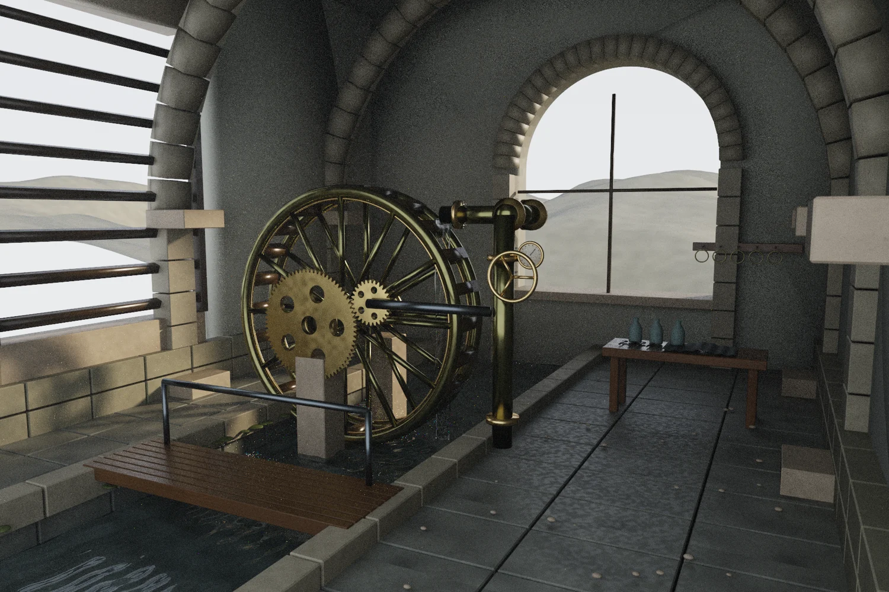

Four systems, one room
GEO generates the 72/28-tooth drive, Scenes supplies spectral transport and geometry helpers, Elements smooths the liquid surface, and Light contributes the water index model.
Independent work in
geometry, motion,
light & sound.
 View render ↗
View render ↗A hydraulic hall built around a bronze tidewheel, shuttered daylight and a water channel running beneath a timber bridge.
View render ↗GEO generates the 72/28-tooth drive, Scenes supplies spectral transport and geometry helpers, Elements smooths the liquid surface, and Light contributes the water index model.
 View render ↗
View render ↗ View render ↗
View render ↗ View render ↗
View render ↗ View render ↗
View render ↗A gear and pipe assembly, falling water sheet, pressure gauge and service bench give the hall a practical organization. Stone, timber and bronze respond to the same lighting.

View render ↗Ripples and spill geometry are authored for this image. All shadows, reflections and refractions are rendered together. Separate non-neural reconstruction preserves the raw films.
IMAGE / RECONSTRUCTION
Move the divider to inspect reconstruction against the retained unfiltered image. The viewer uses reduced-size previews; both native files are linked below.
FINISHEDUNFILTEREDPROJECT RECORDS
Values below come from the retained project reports. The original runs have not been rerun for this portfolio; open each artifact to inspect its scope.
Artifact preview · Open complete JSON ↗ (source unavailable)
{
"passed": true,
"size": [
1800,
1200
],
"invalid_paths": 0,
"bvh_equivalence_rays": 3000,
"raw_exr_bit_exact": true,
"water_closed": true,
"geo_gears_closed": true,
"triangles": 292746,
"render_seconds": 552.838562,
"reconstruction": {
"method": "Direct / indirect / volume separation with normal-depth-material-variance-guided a-trous reconstruction",
"neural": false,
"generative": false,
"outlier_replacement": false,
"path_radiance_clamping": false,
"upscaling": false,
"raw_changed": false,
"dominant_transmitted_geometry_guides": true,
"iterations": {
"direct_diffuse": 2,
"direct_glossy": 3,
"indirect_diffuse": 6,
"indirect_glossy": 3,
"volume": 5
},
"display": "ACES fitted shoulder followed by exact sRGB transfer",
"exposure": 1.70000005,
"seconds": 101.52366638183594
},
"native_resolution": true,
"image_generation": false,
"files": {
"tidal-engine.png": {
"bytes": 1756044,
"sha256": "62171ffc42adfc6329048f1406e16c008a1c51af92d29c4af13ffa1cbed82311"
},
"tidal-engine-preview.jpg": {
"bytes": 287854,
"sha256": "8cf7e21738e915073ac6964023d9e4cc833bc0bd65e7589c27597cf2003f27aa"
},
"tidal-engine_unfiltered.png": {
"bytes": 4140828,
"sha256": "c8dd23a43076f1753928359d2f6ec04a37144a3971854452efef4bfaf52f90af"
},
"tidal-engine.glb": {
"bytes": 5368996,
"sha256": "29d4c06221e4bd8011f2fad0d6f0c98b6bbf0a0667f6cb7f9cca94c77ca3d836"
}
},
"visual_review": {
"overview": "renders/tidal-engine-preview.jpg",
"native_detail": "renders/final-detail.png",
"gear_normal_defect_fixed": true,
"remaining": "Minor spectral sampling noise in small water highlights; static authored water geometry."
}
}Artifact preview · Open complete JSON ↗ (source unavailable)
{
"passed": true,
"white_furnace_maximum": 0.828570664,
"portal_pdf_integral": 0.998408179,
"fresnel_normal": 0.0400000028,
"quartz_ior_400": 1.55773079,
"quartz_ior_700": 1.54061353
}Artifact preview · Open complete JSON ↗ (source unavailable)
{
"renderer": "CYBR Tidal Engine / Scenes transport + Light water optics",
"width": 1800,
"height": 1200,
"max_depth": 12,
"threads": 12,
"seed": 71833,
"view": "hero",
"seconds": 552.838562,
"triangles": 292746,
"spectral_bands": 16,
"dispersion": true,
"fog_density_m_inverse": 0.00899999961,
"camera": [
3.04999995,
-5.5999999,
2.54999995
],
"target": [
-0.300000012,
1.20000005,
1.64999998
],
"horizontal_fov_degrees": 66,
"aperture_radius_m": 0.00300000003,
"exposure": 1.70000005,
"film_white_rgb": [
1.04490995,
0.984612584,
1.02078414
],
"nonfinite_paths": 0,
"clamped_path_contributions": 0,
"image_generation": false,
"texture_synthesis": "deterministic mathematical material maps, no learned model",
"spectral_method": "16 fixed midpoint bins; common-random-number splitting at first dielectric interface; CYBR LIGHT Cauchy water IOR",
"polarization_and_birefringence": false
}Artifact preview · Open complete JSON ↗ (source unavailable)
{
"cybr-elements": {
"url": "https://github.com/cybrdelic/cybr-elements",
"commit": "280770daa8b78274339d26ad45a58f62aeeda39b"
},
"cybr-light": {
"url": "https://github.com/cybrdelic/cybr-light",
"commit": "38f29ee2f6559311513c1f570be7a36224194ce8"
},
"cybr-scenes": {
"url": "https://github.com/cybrdelic/cybr-scenes",
"commit": "964619ccdadf4b159bba0467d207872cd304c56b"
},
"cybr-geo": {
"url": "https://github.com/cybrdelic/cybr-geo",
"commit": "7f246ebc78cbedf46ee3319c5e062a5313f6e789"
}
}Artifact preview · Open complete MD ↗ (source unavailable)
# Visual review record The initial Elemental Orrery direction was rejected by the user. That draft was a logo display with thin ornament, poorly controlled light cards and generic staging; it did not meet the quality or scene intent of the existing CYBR work. Its production render was stopped. The replacement is a new hydraulic hall built around a tidewheel and a continuous water channel. The reference for materials and illumination was the actual retained Observatory IV render, inspected from the CYBR Scenes checkout. The small native renders checked camera framing, room closure, source placement, machinery readability and water. Kept changes include a continuous rear wall around the arch, physically closed water meshes, beveled stone blocks, shuttered daylight, a connected spill outlet, varied metal finishes and small service details. An excessively dark daylight revision was adjusted before the production pass. Full-size inspection then exposed inappropriate smoothing on the planar gear faces: normals averaged across extruded edges gave the faces a warped metallic appearance. The geometry now uses split vertices and flat face normals at those machining edges, while the original closed mesh is checked before the shading split. A separate native crop confirmed the correction. Pale moss patches were also given their intended green material instead of the accidentally selected linen map. `renders/tidal-engine-before-normal-fix.png` retains the image that exposed the shading defect. `renders/tidal-engine.png` is the corrected delivery after the final run. `verification.json` records actual final dimensions, invalid-path count, geometry checks, raw EXR fidelity and output hashes. `native-tests.json` records executed transport checks; the adapted self-test also checks the CYBR LIGHT water IOR. No image model or painted correction was used. Revisions changed scene geometry, normals, materials or lighting before rerendering. Component-separated reconstruction is the same non-neural method used by the Scenes pipeline; it can soften fine reflection detail. The unfiltered native image and raw EXR are retained.